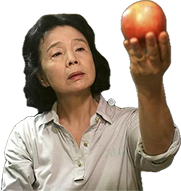

7시
Poetry (Si)
!

제작연도 2010
감독 이창동
장르 드라마
출연 윤정희, 이다윗, 김희라,
안내상
안내상
상영시간 2시간 19분
키워드 노인, 일상
!
60대 중반의 나이지만 소녀 같은 감수성을 지닌 미자(윤정희). 병원 진료를 마치고 응급실 앞을 지나던 미자는 자살한 한 소녀의 어머니가 울고 있는 모습을 목격하지만, 그곳을 그냥 지나친다. 낡은 서민아파트에서 이혼한 딸의 중학생 아들 종욱(이다윗)을 돌보며 살고 있는 미자는 동네 문화원에서 우연히 ‘시’ 강좌를 수강하면서 난생 처음 시 쓰는 일에 매진한다. 미자는 시상을 찾기 위해 그동안 무심히 지나쳤던 일상을 주시하며 아름다움을 찾으려 하지만 녹록지 않다. 어느 날 손자 친구의 학부형(안내상)이 찾아오고, 미자는 손자가 자살한 소녀를 집단 성폭행한 일에 가담한 사실을 알게 된다. 그러나 종욱은 별다른 죄책감을 느끼지 않는 듯 보이고, 가해 학생들의 부모 역시 합의금을 건네는 것으로 사건을 무마하려 한다. 그러는 중, 미자는 피해 여학생의 추모 미사에 참석하고 그녀의 행적을 더듬어 따라가보기도 한다. 그날 밤 형사들이 찾아와 손자를 연행해가고, 이 모습을 가만히 지켜보던 미자는 마침내 시 한 편을 완성한다.